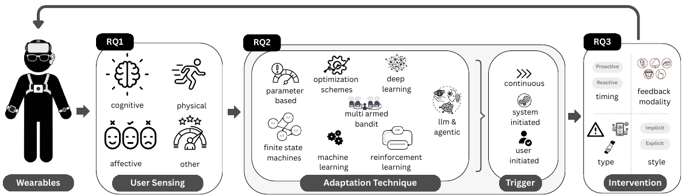

Why this review
Help that arrives at the wrong moment can do more harm than good. Picture a navigation aid giving long directions to a driver who is already overloaded; a system that senses that state could say just “Right” instead. Systems like this are increasingly common in HCI, but the work is scattered across single studies, and no one had reviewed them systematically.
What counts
We call these systems User-Aware Adaptive Assistive Wearables (UAAAWs). A system is included if it does all three:
Infers a user's state or behaviour.
Changes its assistance in response.
Serves an assistive or augmentative purpose.
Screening
Only about 1.9% of screened records met all three criteria.
The taxonomy

Click a stage of the taxonomy:
What state does the wearable read?
Attention, cognitive load, engagement.
Movement, posture, muscle activity.
Stress, emotion, arousal.
States outside these three groups.
How does the system decide what to change?
Parameter thresholds, finite state machines.
Optimisation schemes, multi-armed bandits.
Machine learning, deep learning, reinforcement learning.
Language models and agents that plan the response.
When does the adaptation happen?
Adapts all the time.
The system decides the moment.
The person asks for help.
What does the help look like?
Proactive or reactive.
What kind of support is given.
Implicit or explicit.
Through which sense: touch, sound, sight.
Design trade-offs we saw
- Explicit vs implicit interventions: a clear prompt or a subtle cue.
- Internal vs external context: combining the user's state with what is happening around them.
- Personalisation vs scalability: tuned models work better but are harder to deploy widely.
- Form factor and complexity: practical choices about where the device sits and how sophisticated the adaptation needs to be.
My contribution
I did full-text review and data extraction for 15 papers. For each one I completed the review's extraction form (about 57 fields), then the team decided inclusion: 12 were kept and 3 were excluded after full-text reading.
Which user state is sensed, and how (sensors, modalities, other context).
Mechanism, trigger, rule-based or AI logic, decision method, user profiling.
Timing, style, type, feedback modality, real-time capability, user study.
The 15 papers I reviewed
| Title | Venue | Year | Outcome |
|---|---|---|---|
| EmojiFan: Designing A Social Interface Supporting Facial Expression Interaction for Blind and Low Vision People in Party Settings | CHI | 2026 | excluded after full text |
| Sensing and Modulating the Feel of a Drink: A Personalized Approach via Laryngeal Thermal Feedback | CHI | 2026 | excluded after full text |
| An Emotion Aware Driving Assistant Using Multimodal Recognition and Regulation | IEEE Open Journal of the Computer Society | 2026 | included |
| A Pilot Study of a Gamified CBT-Based Digital Approach for Body Image Distress and Appearance-Related Concerns | Human Behavior and Emerging Technologies | 2026 | included |
| Real-World Gait Speed Estimation: An AI-Based Approach for Adaptive Wearable Devices Integration | IEEE Access | 2026 | included |
| Bionic soft robotic glove with EMG-based gesture and grip strength synchronized prediction for grasping assistance | Biomedical Signal Processing and Control | 2026 | included |
| New Method to Motivate Participation in Daily Life/Everyday Life Activities Using Sensor-Based Smart Application Translating Intention into Action (TIA) | Sensors | 2026 | included |
| Hand Gesture Intention Detection Using sEMG and Transfer Learning in Stroke Survivors | IEEE Journal of Biomedical and Health Informatics | 2026 | excluded after full text |
| ParCuR—A Novel AI-Enabled Gait Cueing Wearable for Patients with Parkinson’s Disease | Sensors | 2025 | included |
| Retiplus: Augmented Reality Rehabilitation System to Enhance Autonomy and Quality of Life in Individuals with Low Vision | Electronics (Switzerland) | 2025 | included |
| Streamlining Wearable Robot Personalization With Physiological Sensors | Proc. SPIE | 2025 | included |
| From Preference to Performance: Patient-Centered Design of Multimodal Cueing in Parkinson's Disease Gait Training | CHI | 2026 | included |
| Designing for Long-Term Emotion Regulation: A Breathing Biofeedback Game for Women in Compulsory Isolation Drug Rehabilitation Centers | CHI | 2026 | included |
| ProMemAssist: Exploring Timely Proactive Assistance Through Working Memory Modeling in Multi-Modal Wearable Devices | UIST | 2025 | included |
| Vid2Coach: Transforming How-To Videos into Task Assistants | UIST | 2025 | included |
How it connects to my work
Links
The 73 papers, organised by our taxonomy and open to contributions.